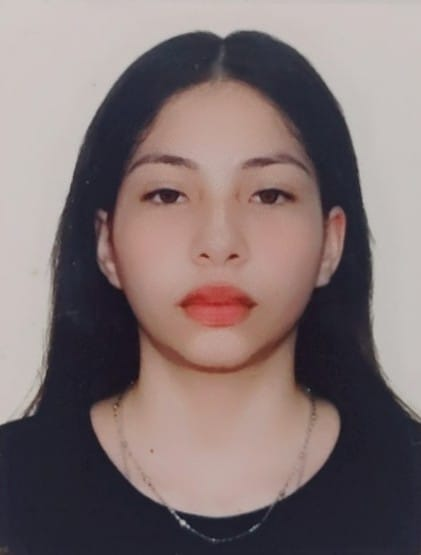

Curriculum Vitae

ANA JUDIT LÓPEZ MÉNDEZ
Contacto
Email: 220831@mail.unacar.mx
Ubicación: Ciudad del Carmen, México
PERFIL PROFESIONAL
Diseñadora multimedia En busca de encontrar una oportunidad laboral en la que poner en práctica todos mis conocimientos aprendidos y experiencias digitales como en ilustración, tecnología y cualificada para desarrollar todo tipo de proyectos creativos, como modelados 3d, materiales gráficos, páginas webs, branding y mockups.
APTITUDES
- Ilustrador
- Habilidad creativa
- Artes Gráficas
- Programas: C++, Unity, Visual
- Animación intermedio
- Profesional Autónomo y responsable
- Modelado 3d básico
- Persona de mente ágil y proactiva
- Detallista
IDIOMAS
Español: Idioma nativo
Inglés: Básico A2
EXPERIENCIA LABORAL
Ilustrador y Diseñador Autónomo - Cd del Carmen
- Creación de ilustraciones digitales o en papel.
- Desarrollo de creaciones de alta calidad, incluyendo personajes, entornos y objetos.
- Aplicación de teoría del color y técnicas de iluminación para mejorar las ilustraciones.
- Determinación de los diseños apropiados para diferentes medios, como pantalla, impresión y publicidad.
Diseñador Autónomo - Cd del Carmen
- Atención al cliente y escucha activa de sus necesidades.
- Diseño para páginas web, mockups de productos o publicitarios y marcas con aspecto único.
- Ediciones digitales.
- Dominio intermedio de Adobe Photoshop.
FORMACIÓN ACADÉMICA
Ingeniería en Licenciatura en Diseño Multimedia
Universidad Autónoma del Carmen | Ciudad del Carmen, Campeche
CURSOS Y ACTIVIDADES EXTRA-CURRICULARES
Club de Animación - Universidad Autónoma del Carmen
- Actualmente
- Participación en la planificación y organización de eventos de ventas para recaudar fondos para la escuela.
- Desarrollo de una animación personal para exhibir el trabajo de cada miembro del club.
- Colaboración en los procesos de recorte y montaje de materiales para los eventos de ventas.
- Diseño y creación de un taumatropo para su venta en el puesto del club.
- Participación activa en la venta de productos durante los eventos organizados por el club.